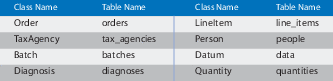

19.1 Defining Your Data
In Depot, we defined a number of models, including one for an Order. This particular model has a number of attributes, such as an email address of type String. In addition to the attributes that we defined, Rails provided an attribute named id that contains the primary key for the record. Rails also provides several additional attributes, including attributes that track when each row was last updated. Finally, Rails supports relationships between models, such as the relationship between orders and line items.
When you think about it, Rails provides a lot of support for models. Let’s examine each in turn.
Organizing Using Tables and Columns
Each subclass of ActiveRecord::Base, such as our Order class, wraps a separate database table. By default, Active Record assumes that the name of the table associated with a given class is the plural form of the name of that class. If the class name contains multiple capitalized words, the table name is assumed to have underscores between these words.

These rules reflect DHH’s philosophy that class names should be singular while the names of tables should be plural.
Although Rails handles most irregular plurals correctly, occasionally you may stumble across one that is not handled correctly. If you encounter such a case, you can add to Rails’ understanding of the idiosyncrasies and inconsistencies of the English language by modifying the inflection file provided:
If you have legacy tables you have to deal with or don’t like this behavior, you can control the table name associated with a given model by setting the table_name for a given class:
| |
class Sheep < ActiveRecord::Base |
| |
self.table_name = "sheep" |
| |
end |
Instances of Active Record classes correspond to rows in a database table. These objects have attributes corresponding to the columns in the table. You probably noticed that our definition of class Order didn’t mention any of the columns in the orders table. That’s because Active Record determines them dynamically at runtime. Active Record reflects on the schema inside the database to configure the classes that wrap tables.
In the Depot application, our orders table is defined by the following migration:
Let’s use the handy-dandy rails console command to play with this model. First, we’ll ask for a list of column names:
| |
depot> rails console |
| |
Loading development environment (Rails 3.1.0) |
| |
>> Order.column_names |
| |
=> ["id", "name", "address", "email", "pay_type", "created_at", "updated_at"] |
Then we’ll ask for the details of the pay_type column:
| |
>> Order.columns_hash["pay_type"] |
| |
=> #<ActiveRecord::ConnectionAdapters::SQLiteColumn:0x7fe673f7da80 |
| |
@name="pay_type", @null=true, @default=nil, @sql_type="varchar(10)", |
| |
@type=:string, @scale=nil, @precision=nil, @primary=false, |
| |
@limit=10> |
David says:
Where Are Our Attributes?
The notion of a database administrator (DBA) as a separate role from programmer has led some developers to see strict boundaries between code and schema. Active Record blurs that distinction, and no other place is that more apparent than in the lack of explicit attribute definitions in the model.
But fear not. Practice has shown that it makes little difference whether we’re looking at a database schema, a separate XML mapping file, or inline attributes in the model. The composite view is similar to the separations already happening in the Model-View-Control pattern—just on a smaller scale.
Once the discomfort of treating the table schema as part of the model definition has dissipated, you’ll start to realize the benefits of keeping DRY. When you need to add an attribute to the model, you simply create a new migration and reload the application.
Taking the “build” step out of schema evolution makes it just as agile as the rest of the code. It becomes much easier to start with a small schema and extend and change it as needed.
Notice that Active Record has gleaned a fair amount of information about the pay_type column. It knows that it’s a string of at most ten characters, it has no default value, it isn’t the primary key, and it may contain a null value. Rails obtained this information by asking the underlying database the first time we tried to use the Order class.
The attributes of an Active Record instance generally correspond to the data in the corresponding row of the database table. For example, our orders table might contain the following data:
| |
depot> sqlite3 -line db/development.sqlite3 "select * from orders limit 1" |
| |
id = 1 |
| |
name = Dave Thomas |
| |
address = 123 Main St |
| |
email = customer@example.com |
| |
pay_type = Check |
| |
created_at = 2010-06-18 00:36:57.355069 |
| |
updated_at = 2010-06-18 00:36:57.355069 |
If we fetched this row into an Active Record object, that object would have seven attributes. The id attribute would be 1 (a Fixnum), the name attribute would be the string "Dave Thomas", and so on.
We access these attributes using accessor methods. Rails automatically constructs both attribute readers and attribute writers when it reflects on the schema:
| |
o = Order.find(1) |
| |
puts o.name |
| |
o.name = "Fred Smith" |
Setting the value of an attribute does not change anything in the database—we must save the object for this change to become permanent.
The value returned by the attribute readers is cast by Active Record to an appropriate Ruby type if possible (so, for example, if the database column is a timestamp, a Time object will be returned). If we want to get the raw value of an attribute, we append _before_type_cast to its name, as shown in the following code:
| |
product.price_before_type_cast |
| |
product.updated_at_before_type_cast |
Inside the code of the model, we can use the read_attribute and write_attribute private methods. These take the attribute name as a string parameter.
We can see the mapping between SQL types and their Ruby representation in Figure 46, Mapping SQL types to Ruby types. Decimal and Boolean columns are slightly tricky.
Rails maps columns with Decimals with no decimal places to Fixnum objects; otherwise, it maps them to BigDecimal objects, ensuring that no precision is lost.
In the case of Boolean, a convenience method is provided with a question mark appended to the column name:
| |
user = User.find_by_name("Dave") |
| |
if user.superuser? |
| |
grant_privileges |
| |
end |
In addition to the attributes we define, there are a number of attributes that Rails either provides automatically or have special meaning.
Additional Columns Provided by Active Record
A number of column names have special significance to Active Record. Here’s a summary:
created_at, created_on, updated_at, updated_on-
This is automatically updated with the timestamp of a row’s creation or last update. Make sure the underlying database column is capable of receiving a date, datetime, or string. Rails applications conventionally use the _on suffix for date columns and the _at suffix for columns that include a time.
lock_version-
Rails will track row version numbers and perform optimistic locking if a table contains lock_version.
type-
Active Record can be subclassed. When you do so, all of the attributes for all of the subclasses are kept in the same table. The type attribute is used to name the column that will be used to track the type of a row.
id-
This is the default name of a table’s primary key column (here).
xxx_id-
This is the default name of a foreign key reference to a table named with the plural form of xxx .
xxx_count-
This maintains a counter cache for the child table xxx.
Additional plugins, such as act_as_list,[41] may define additional columns.
Both primary keys and foreign keys play a vital role in database operations and merit additional discussion.